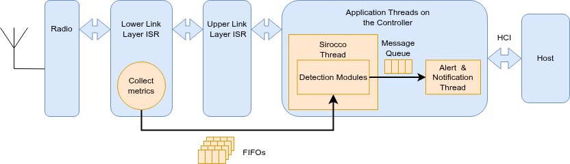

Sirocco
Sirocco is a flexible and lightweight intrusion detection framework for Bluetooth Low Energy (BLE), built upon the Zephyr RTOS. It targets sophisticated and low-level attacks such as spoofing, signal injection, and key sharing vulnerabilities. Addressing the unique challenges of both central and peripheral BLE device roles, Sirocco offers a robust defense mechanism with minimal performance impact.
During my postdoctoral research, a key technical objective was to improve the stability and performance of an existing BLE IDS prototype, OASIS. Initial investigations into OASIS revealed a performance bottleneck: the system's detection algorithms were being executed directly within the ISR context. This approach led to excessive CPU time spent in ISRs. As a result, the strict timing constraints mandated by the BLE standard were violated. Therefore, the system suffered from instability, often leading to dropped BLE connections, especially when multiple detection modules were active or under attack.
To address these issues, I redesigned the system's architecture.
- Focus on an open-source BLE stack: I chose to base the work on the Zephyr RTOS BLE stack because it gave me great insight about how BLE packets are processed and which low-level and radio metrics are important for the detection algorithms. Moreover, the source-based approach is enable a tighter integration of the framework with the kernel components and offer to application developers..
- Decouple the detection from ISRs: I moved the computationally intensive detection algorithms out of the ISR context and into its dedicated kernel thread. Metric collection, requiring immediate data capture during packet transmission and reception, remained within the ISR but was streamlined to be lightweight.
- Design an efficient inter-thread communication: A FIFO queue, based on a ring buffer, was utilized to promptly transfer the collected data to the detection thread. Moreover, a custom memory allocator optimized for allocation speed in the ISR by deferring memory management operations to the less time-critical kernel thread.
- Reimplement the modular design for algorithm detection: The detection modules are reimplemented from OASIS. This allows flexibility to tailor detection modules to the device roles (central and/or peripheral) and the evolving landscape of BLE attacks.
- Add a response mechanism: Although Sirocco focuses on attack detection, it provides a callback mechanism when an alert is raised. This allows the developer to adapt their application's behavior. For instance, one could terminate a connection upon detecting a MITM attack, or during a spoofing attack on a peripheral, broadcast advertisements to nearby devices to signal an attack is underway.
 Figure: Sirocco architecture diagram. The Zephyr RTOS BLE stack architecture is shown in blue, and the Sirocco components in orange.
Performance analysis revealed a reasonable latency overhead, with measured end-to-end latencies averaging between 9 and 47 μs. Although the ISR latency increased, the worst-case execution times stayed well within BLE specification limits (150 μs). The framework added a modest 5-6KB to flash memory usage, with most detection modules having minimal footprints. RAM usage is chiefly determined by configurable FIFO buffer sizes. Power consumption showed minimal increases in most scenarios ranging from 0.05% to 0.44%. In controlled experiments, Sirocco achieved high detection rates and no false positives for attacks like BTLEJuice, KNOB, and GATTacker, with a very low false positive rate for BTLEJack.
The source code is available on GitHub, along with application examples demonstrating its usage.